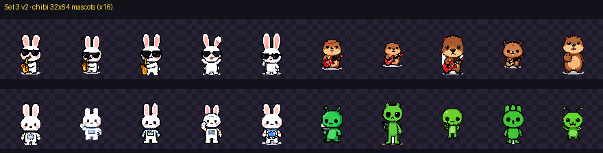
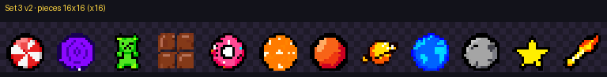
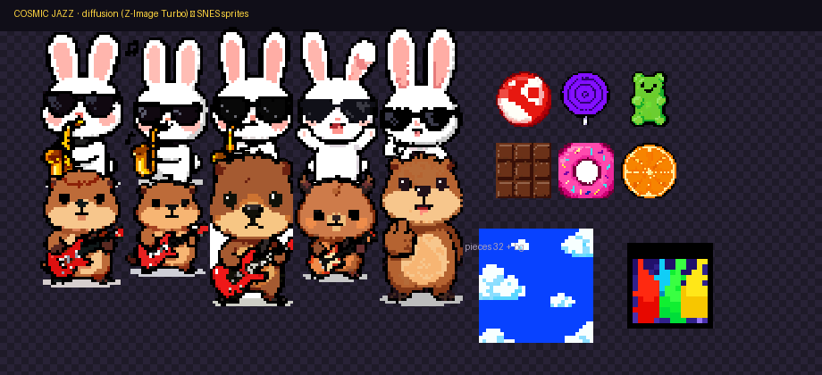
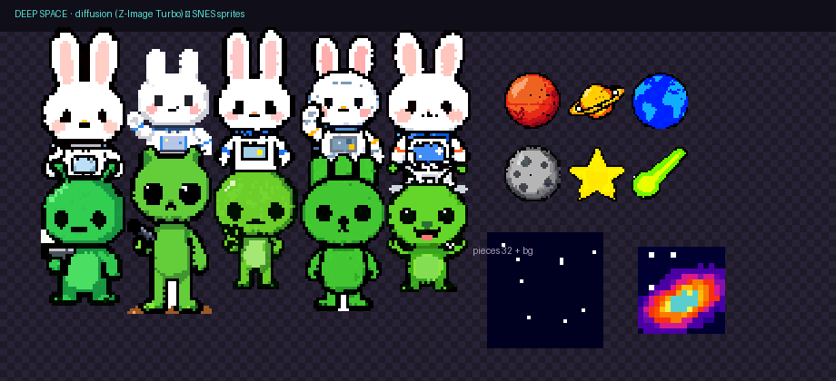
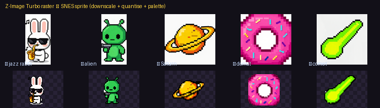
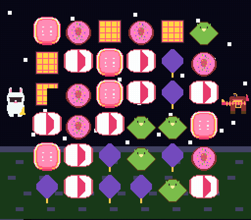
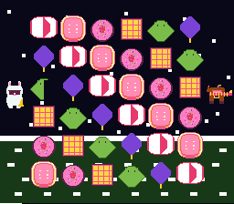
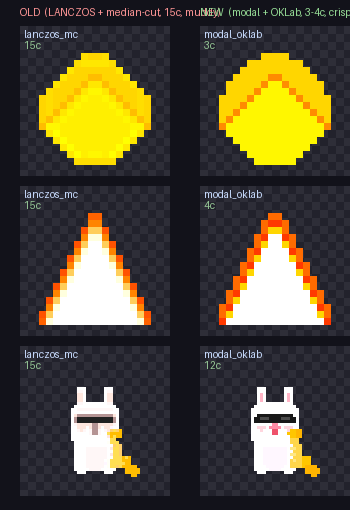

Not a lone icon — a coherent set of characters, pieces and backgrounds, quantised to a hardware-legal SNES palette and ready to drop into a ROM.

Two themes — Cosmic Jazz and Deep Space — each with two mascots × 5 poses, six pieces (at 32² and 16²), and backgrounds. A shared palette makes the whole set cohere and fit one 16-colour bank.

The GPU path — Z-Image Turbo via ComfyUI. Each theme: two mascots × 5 chibi poses (32×64), six pieces, and backgrounds — quantised to one hardware-legal SNES palette.


Diffusion renders big, then the shared back-end downscales & quantises to a real SNES sprite — the pixels aren't a happy accident:


Generated sprites → CHR → a buildable PVSnesLib match-3, shown under Mesen2. The pieces, mascots and their animation all come from the pipeline; the game around them is a showcase.

The front-end is swappable — an LLM emitting SVG (no GPU), or Z-Image Turbo diffusion (a GPU, better quality). The downscale + perceptual quantise + palette lock are identical.
